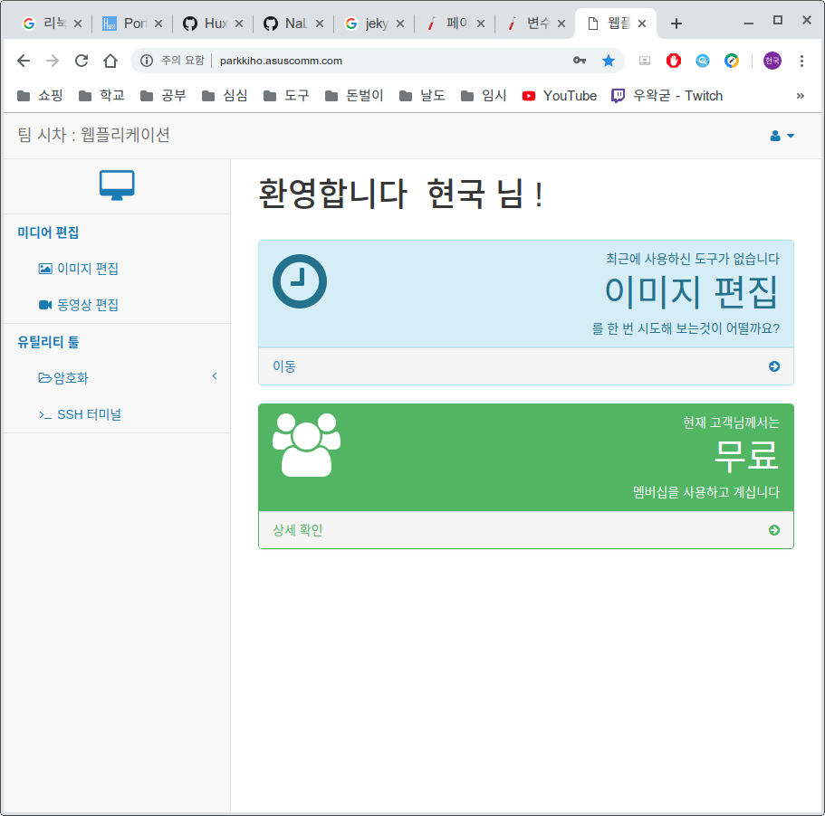

-
웹플리케이션
-
프레젠테이션 등에 사용할 간단한 컨텐츠를 편집하려고 자주 사용하지 않는 프로그램을 다운로드 받아보신 경험이 있으신가요?
혹은, 당신이 사무직이거나 개발자라면, 문서 등을 암호화 하려고 안전하지 않은 암호화 프로그램을 조심스럽게 찾아보신 적 있나요?
이런 불편한 경험 덕분에, 온라인상에서 항시 사용가능한 온라인 웹 어플리케이션, 즉 웹플리케이션을 제작하게 되었습니다.
웹플리케이션은 간단한 수준의 작업을 프로그램을 다운받지 않고도 사용가능하도록 하게 해줍니다! - Spring Try it
-
프레젠테이션 등에 사용할 간단한 컨텐츠를 편집하려고 자주 사용하지 않는 프로그램을 다운로드 받아보신 경험이 있으신가요?